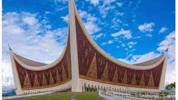

<!DOCTYPE html>
<html>
<head>
    <title>UTS Padang</title>
    <link rel="stylesheet" type="text/css" href="leaflet.css"/>
    <script type="text/javascript" src="leaflet.js"></script>
</head>
<body>
    <div id="mapku" style="width: 100%; height: 600px"></div>
</body>
<script type="text/javascript">
    
    var myMap = L.map('mapku').setView([-0.9285558,100.3629103],15);

    var title = L.tileLayer('https://tile.openstreetmap.org/{z}/{x}/{y}.png',{
        maxZoom: 19,
        id: 'mapbox/streets-v11',
        tileSize: 512,
        zoomOffset: -1
    }).addTo(myMap);


    var info_masjid_raya = '<p style="text-align: center;"></p> <p> Majid Raya Sumatera Barat adalah masjid tanpa kubah. Atap masjid berupa khas rumah adat Minang serta terdapat ukiran-ukiran pada dinding. Masyarakat Sumatera Barat terkenal dengan pepatah adat basandi syarak, basandi Kitabullah, yang artinya adat bersendikan kepada agama, dan agama bersendikan Kitabullah Al-Quran. Hal itulah tercemrmin dalam Masjid Raya Sumatera Barat. <a href="https://travel.detik.com/domestic-destination/d-4799337/pesona-masjid-raya-sumatera-barat-yang-jadi-ikon-kota-padang"> Baca Selengkapnya </a></p>';
    
    var myLocation = [
        //[-0.924381,100.3623671, 'Masjid Raya Sumbar','Informasi Tentang Masjid Raya Sumbar'],
        [-0.9356182,100.3558622, 'Kantor Gubernur Sumbar','Informasi Tentang Kantor Gubernur Sumbar'],
        [-0.87595,100.3869792, 'Kantor Walikota Padang','Informasi Tentang Walikota Padang'],
        [-0.913817,100.4657455, 'Politeknik Negeri Padang','Informasi Tentang PNP'],
        [-0.9149979675726535, 100.45814666748164,'UNAND','Informasi Universitas Andalas'],
        [-0.9235964425743382, 100.44357708097301,'Aciak','Informasi Aciak'],
        [-0.9493145804367534, 100.41750669920577,'SMKN 7 Padang', 'Informasi SMKN 7 Padang']
    ];


    for (var i = 0; i<myLocation.length; i++){
       markerMaps = new L.marker([myLocation[i][0], myLocation[i][1]]).addTo(myMap).bindTooltip(myLocation[i][2]).bindPopup(myLocation[i][3]);
    }
    
    var padang = [
        [-0.924381,100.3623671],
        [-0.87595,100.3869792,],
        [-0.913817,100.4657455],
        [-0.9149979675726535, 100.45814666748164],
        [-0.9235964425743382, 100.44357708097301],
        [-0.9493145804367534, 100.41750669920577],
        [-0.9356182,100.3558622]
    ];

    L.polyline(padang).addTo(myMap);

   var circle = L.circle([-0.924381,100.3623671],{
            color: 'red',
            fillColor: '#f03',
            fillopacity: 0.5,
            radius: 500
        }).addTo(myMap).bindPopup("Sini Circle");

        var KoordinatAreaPoliteknik = [
            [-0.9147077376519951, 100.46564379056132],
            [-0.9134794067529808, 100.46584268850081],
            [-0.9123914561774883, 100.46593628753118],
            [-0.9128476935556772, 100.46776146862321],
            [-0.9130348678479252, 100.46910695468463],
            [-0.914602452162829, 100.46897825601789],
            [-0.9149651021680503, 100.46833476268415],
            [-0.9148130231380698, 100.46652128147093],
            [-0.9147077376519951, 100.46560869092491],
    ];

   var areaPoliteknik = L.polygon(KoordinatAreaPoliteknik,{color: 'orange'}).addTo(myMap);
   
   var LeafIcon = L.Icon.extend({
        options: {
            iconSize: [30,45]
        }
    })

    var masjidicon = new LeafIcon({iconUrl: 'images/markermasjid.png'});

    L.marker([-0.924381,100.3623671],{icon: masjidicon}).bindPopup("<b>Info Masjid Raya Sumatera Barat</b> Waktu Zuhur : 12.45 WIB").bindPopup(info_masjid_raya).addTo(myMap);
    myMap.on('click',onMapClick);

</script>
</html>
